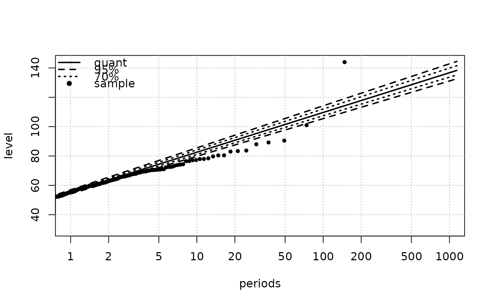

Summary and print methods for "Renouv" objects
summary.Renouv.RdSummary method for "Renouv" objects representing 'Renouvellement' (POT) fitted models.
Usage
# S3 method for class 'Renouv'
print(x,
digits = max(3L, getOption("digits") - 3L),
...)
# S3 method for class 'Renouv'
summary(object,
correlation = FALSE,
symbolic.cor = FALSE,
...)
# S3 method for class 'summary.Renouv'
print(x,
coef = TRUE,
pred = TRUE,
probT = FALSE,
digits = max(3, getOption("digits") - 3),
symbolic.cor = x$symbolic.cor,
signif.stars = getOption("show.signif.stars"),
...)
# S3 method for class 'summary.Renouv'
format(x,
...)Arguments
- object
-
An object with class
"Renouv". - x
-
An object of class
"summary.Renouv", i.e. a result of a call tosummary.Renouv. - correlation
-
Logical; if
TRUE, the correlation matrix of the estimated parameters is returned and printed. - coef
-
Logical. If
FALSE, the table of coefficients and t-ratios' will not be printed. - pred
-
Logical. If
FALSE, the table of return periods/levels will not be printed. - probT
-
If
FALSE, the \(p\)-values for the t-tests will not be printed nor displayed. - digits
-
the number of significant digits to use when printing.
- symbolic.cor
-
logical. If
TRUE, print the correlations in a symbolic form (seesymnum) rather than as numbers. - signif.stars
-
logical. If
TRUE, ‘significance stars’ are printed for each coefficient. - ...
-
Further arguments passed to or from other methods.
Details
print.summary.Renouv tries to be smart about formatting the
coefficients, standard errors, return levels, etc.
format.summary.Renouv returns as a limited content as a
character string. It does not embed coefficients values nor
predictions.
Value
The function summary.RenOUV computes and returns a list of
summary statistics concerning the object of class "Rendata"
given in object. The returned list is an object with class
"summary.Renouv".
The function print.summary.Rendata does not returns anything.
Examples
## use Brest data
fit <- Renouv(Brest)
#> Special inference for the exponential case without history
#> Warning: uncertainty on the rate not taken into account yet in the exponential with no history case

summary(fit)
#> o Main sample 'Over Threshold'
#> . Threshold 30.00
#> . Effect. duration 147.62 years
#> . Nb. of exceed. 1289
#>
#> o Estimated rate 'lambda' for Poisson process (events): 8.73 evt/year.
#>
#> o Distribution for exceedances y: "exponential", with 1 par. "rate"
#>
#> o No transformation applied
#>
#> o Coefficients
#>
#> Estimate Std. Error t value
#> lambda 8.7318791 0.243209905 35.90265
#> rate 0.0850335 0.002368447 35.90265
#>
#> Degrees of freedom: 2 (param.) and 1289 (obs)
#>
#> o Inference method used for return levels
#> "chi-square for exponential distribution (no historical data)"
#>
#> o Return levels
#>
#> period quant L.95 U.95 L.70 U.70
#> 33 10 83 80 86 81 84
#> 35 20 91 88 94 89 93
#> 39 50 101 98 106 99 104
#> 41 100 110 105 114 107 112
#> 43 200 118 113 123 115 120
#> 46 300 123 118 128 120 125
#> 48 400 126 121 131 123 129
#> 49 500 129 123 134 126 131
#> 51 600 131 125 136 128 134
#> 52 700 133 127 138 130 136
#> 53 800 134 129 140 131 137
#> 54 900 135 130 141 133 139
#> 55 1000 137 131 143 134 140
#>
#>
#> o no 'MAX' historical data
#>
#> o no 'OTS' historical data
#>
#> o Kolmogorov-Smirnov test
#>
#> Asymptotic one-sample Kolmogorov-Smirnov test
#>
#> data: OTjitter(y.OT, threshold = 0)
#> D = 0.02115, p-value = 0.6115
#> alternative hypothesis: two-sided
#>
#>
#> o Implied model for block maxima
#> Distribution: gumbel
#> Coeffficients
#> loc scale
#> 55.48385 11.76007